COACH COPY · answers enabled · do not share the link
🚀 Session 3 · Wed, Oct 28, 2026
One team brain teaser, then a 10-question individual test
🧩 Team brain teaser (10 min)
Work on it together as a team.
1The domino puzzle
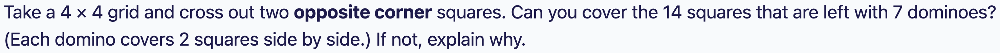
Answer: No, it can't be done
Try it. Draw the grid and try a few ways. You always get stuck with two squares left that aren't next to each other.
Color it like a checkerboard. Every domino covers one dark and one light square.
Opposite corners are the same color. Cross both out and you have 6 of one color and 8 of the other.
7 dominoes always cover 7 dark and 7 light squares, so 6 and 8 can't work. (A computer search agrees.)
Bonus: the same reason works for a full 8 × 8 chessboard with opposite corners removed.
⚡ Trick: When a puzzle asks can it be done?, look for something that never changes, like a checkerboard coloring. It turns a puzzle into a simple count.
📝 Individual test (30 min)
10 problems, no calculators. Work alone and show your work. If you're stuck for more than 3 minutes, skip and come back. Some problems have a shortcut, so look for it before you start a long calculation.
🚫🤖 Please do NOT use AI, a calculator, or a search engine to solve these. This test is for you. A wrong answer helps us find what to teach next, and a copied answer helps no one.
30:00
1Rates
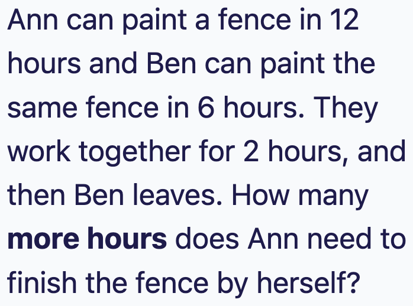
Answer: 6 hours
Think in rates, which means the fraction of the fence painted each hour. Ann paints 1/12 per hour. Ben paints 1/6 per hour.
Together they paint 1/12 + 2/12 = 3/12 = 1/4 of the fence each hour.
In 2 hours they paint 2 × 1/4 = 1/2 of the fence. Half the fence is left.
Ann paints 1/12 per hour, so she needs (1/2) ÷ (1/12) = 6 hours.
Check: Ann alone would take 12 hours for the whole fence, so half the fence takes 6 hours. ✓
⚡ Trick: For work problems, write each person's rate as a fraction of the job per hour. Rates add when people work together. Then time = amount left ÷ rate.
2Sets
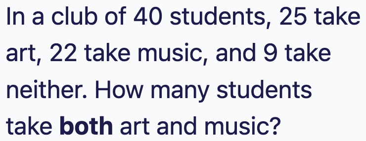
Answer: 16
9 students take neither, so 40 − 9 = 31 students take at least one of the two.
If we add 25 + 22 = 47, the students who take both get counted twice.
The double count is 47 − 31 = 16, so 16 students take both.
Check: art only is 25 − 16 = 9, music only is 22 − 16 = 6, both is 16, neither is 9. Total 9 + 6 + 16 + 9 = 40. ✓
⚡ Trick: Use the formula at least one = A + B − both. Rearrange it to get both = A + B − (at least one). A quick Venn diagram with two circles keeps it clear.
3Percent
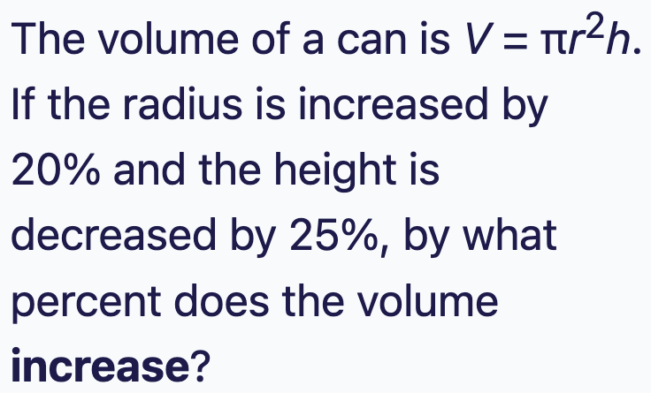
Answer: 8%
A 20% increase means multiply by 1.2. A 25% decrease means multiply by 0.75.
The radius is squared in the formula, so its effect is 1.22 = 1.44.
The volume is multiplied by 1.44 × 0.75 = 1.08.
A multiplier of 1.08 means 8% more.
Check with real numbers: r = 10 and h = 4 gives 400π. The new can has r = 12 and h = 3, which gives 432π. And 432 ÷ 400 = 1.08. ✓
⚡ Trick: Never add or subtract percents. Turn each percent into a multiplier and multiply them. If a quantity is squared in the formula, square its multiplier too.
4Primes
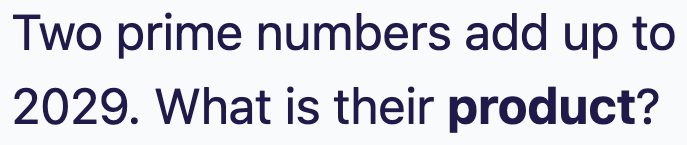
Answer: 4054
All primes except 2 are odd.
Odd + odd = even, but 2029 is odd. So the two primes can't both be odd.
That means one of them must be 2, so the other is 2029 − 2 = 2027.
Is 2027 prime? Since 45 × 45 = 2025, we only need to test primes up to 43, and none of them divides 2027. So yes.
The product is 2 × 2027 = 4054.
⚡ Trick: When you see primes with an odd total, think of 2, the only even prime. Odd and even answers many problems in one line, with no searching.
5Geometry
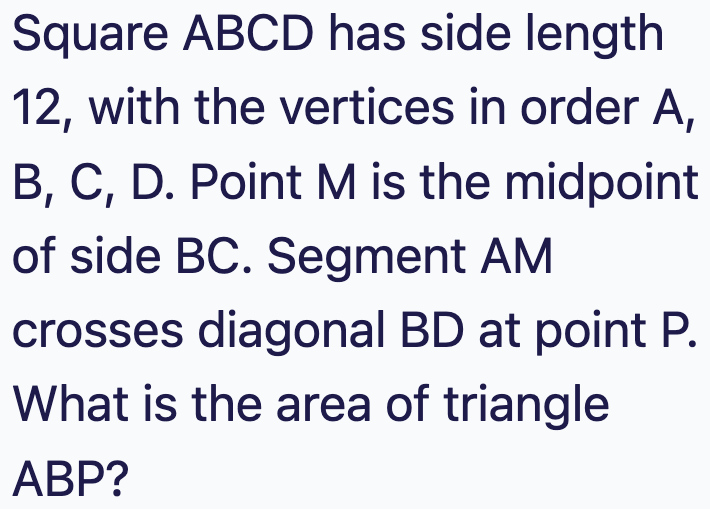
Answer: 24
Sketch it. M is the midpoint of BC, so BM = 6.
AD and BM are parallel (opposite sides of a square). So triangles PAD and PMB are similar, and the ratio of their sides is AD : MB = 12 : 6 = 2 : 1.
That means DP : PB = 2 : 1, so PB is exactly 1/3 of the diagonal DB.
Triangles ABD and ABP share the corner A, and their bases DB and PB sit on the same line. So their areas are in the same ratio as the bases.
Triangle ABD is half of the square, which is 144 ÷ 2 = 72. So triangle ABP is 1/3 of 72 = 24.
Check with coordinates: A = (0, 0), B = (12, 0), M = (12, 6). Line AM meets BD at P = (8, 4). The area is ½ × 12 × 4 = 24. ✓
⚡ Trick: Parallel lines give similar triangles, and similar triangles give a ratio. Also, triangles that share a corner and have bases on the same line have areas in the same ratio as their bases.
6Counting
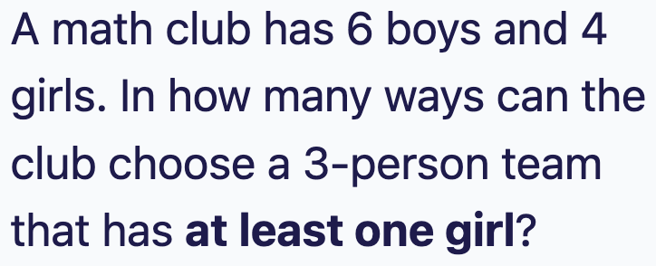
Answer: 3168
Counting numbers with at least one 7 directly is messy, because a number might have one 7, two 7s, three, or four. Count the opposite instead: numbers with no 7 at all.
There are 9000 four-digit numbers in total (1000 to 9999).
With no 7: the first digit can be 1 to 9 except 7, which is 8 choices. Each of the other three digits can be 0 to 9 except 7, which is 9 choices each.
No 7 at all: 8 × 9 × 9 × 9 = 5832.
At least one 7 = 9000 − 5832 = 3168.
⚡ Trick: Whenever a problem says at least one, count the opposite (none) and subtract from the total. It turns many cases into one.
7Algebra
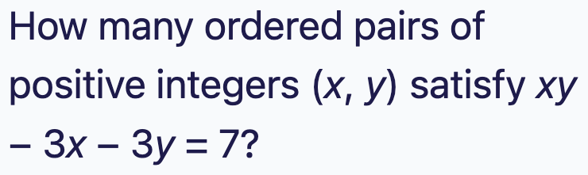
Answer: 5
Trying numbers would take forever. The idea is to make the left side factor. Add 9 to both sides: xy − 3x − 3y + 9 = 16.
The left side is now a product: (x − 3)(y − 3) = 16. Check by multiplying it out: xy − 3x − 3y + 9. ✓
So x − 3 and y − 3 are whole numbers whose product is 16. The positive pairs are 1 × 16, 2 × 8, 4 × 4, 8 × 2 and 16 × 1.
Add 3 back to each: (x, y) = (4, 19), (5, 11), (7, 7), (11, 5), (19, 4).
What about negative pairs, like (−1) × (−16)? That gives y = −13, which isn't positive. The other negative pairs fail the same way.
So there are 5 pairs.
⚡ Trick: This is called Simon's Favorite Factoring Trick. When an equation has xy plus x and y terms, add a number to both sides so it factors into (x − a)(y − b) = a number. For xy − 3x − 3y, add 3 × 3 = 9. Then list the factor pairs.
8Geometry
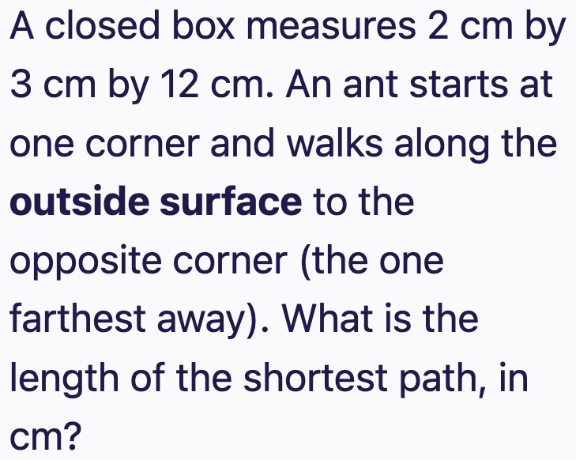
Answer: 13 cm
The ant can't walk through the box, so imagine unfolding the box flat. A shortest path on the surface becomes a straight line on the flat picture.
To reach the opposite corner, the ant crosses two neighboring faces. Unfold those two faces into one rectangle and the path is its diagonal.
There are 3 ways to choose the faces. For a box a × b × c, the flat rectangle is (a + b) by c, so the path is √((a + b)2 + c2). Try all three:
(2 + 3) by 12: √(25 + 144) = √169 = 13 (2 + 12) by 3: √(196 + 9) = √205, about 14.3
(3 + 12) by 2: √(225 + 4) = √229, about 15.1
The shortest is 13 cm.
Sanity check: the straight line through the inside of the box is √(4 + 9 + 144) = √157, about 12.5. The surface path has to be a bit longer than that, and 13 is. ✓
⚡ Trick: For a shortest path on the outside of a solid, unfold it, then use the Pythagorean theorem. Try each way of unfolding and take the smallest. The smallest answer comes when the longest edge is the one that is not added to another edge.
9Arithmetic
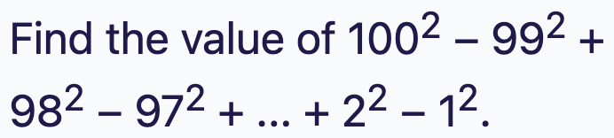
Answer: 5050
Don't square every number. Group the terms in pairs: (1002 − 992) + (982 − 972) + ... + (22 − 12).
Use a2 − b2 = (a − b)(a + b). For the first pair, that is (100 − 99)(100 + 99) = 1 × 199 = 199, which is 100 + 99.
Every pair is made of neighbors, so a − b = 1 each time. So each pair just equals the two numbers added together. For example 982 − 972 = 98 + 97.
So the whole thing equals 100 + 99 + 98 + 97 + ... + 2 + 1.
⚡ Trick:a2 − b2 = (a − b)(a + b). When a and b are neighbors, a − b = 1, so the whole thing is just a + b. Whenever you see squares being subtracted, look for pairs. Big numbers are often there to tempt you into long arithmetic.
10Logic
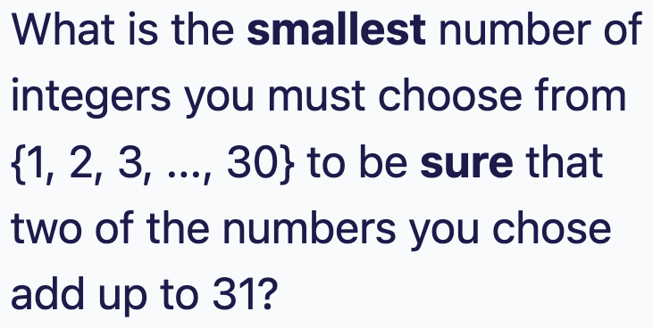
Answer: 16
Make "boxes" by pairing up numbers that add to 31: (1, 30), (2, 29), (3, 28), ..., (15, 16). That is 15 pairs, and together they use all 30 numbers.
Can you choose 15 numbers and still avoid a sum of 31? Yes. Take one number from each pair, for example 1 through 15. The biggest possible sum is 15 + 14 = 29. So 15 is not enough.
Now choose 16 numbers. There are only 15 pairs, so two of your numbers must come from the same pair, and those two add to 31.
So the answer is 16.
Check a small version: from {1, ..., 6}, pairs that add to 7 are (1, 6), (2, 5), (3, 4). Picking 1, 2, 3 is safe, but any 4 numbers force a pair. 3 pairs, so the answer is 4. ✓
⚡ Trick: This is the pigeonhole principle: if you put more than n objects into n boxes, some box gets two. The hard part is choosing the boxes. Ask yourself what the worst case is (the most you can pick and still be safe), then add 1.
🎮 Game time: Math Sprint (10 min)
Answer as many as you can in 10 minutes. Everyone starts on Easy, so go fast for speed points. Get 3 right in a row to move up to Medium, then Hard, which are worth more. At the end, paste your code in the chat.